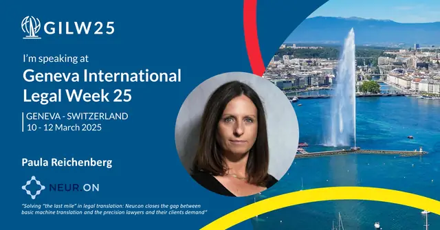

Les enseignements clés de la conférence LegalTechTalk 2024 à Londres
Neur.on rapporte les échanges de la conférence LegalTechTalk 2024, tenue à Londres. Des directeurs juridiques y ont défendu une relation de confiance et un partage de connaissances avec leurs cabinets d’avocats externes. Les cabinets ont mis en avant des équipes sur mesure, l’analyse des processus fondée sur les données et leur rôle de conseil technologique, y compris en traduction juridique.
Qu’attendent les directeurs juridiques de leurs cabinets d’avocats ?
« Je refuse de payer pour des informations que j’ai déjà », s’exclame le directeur juridique d’une entreprise du secteur de l’énergie, interrogé sur ses principaux critères pour mandater des cabinets d’avocats externes.
« C’est une vision simpliste, et certainement pas une base solide pour construire une relation durable et fructueuse avec les cabinets d’avocats référencés », rétorque le directeur juridique d’une multinationale, chargé de gérer les fonctions juridiques de plus de 15 pays. « Si vous attendez d’un cabinet qu’il apporte de la valeur ajoutée et des conseils opérationnels directement applicables, juristes d’entreprise et avocats externes doivent partager leurs connaissances et construire un terrain d’entente. Cela demande de l’investissement et de la confiance des deux côtés. »
« “Confiant” n’est pas le premier adjectif qui vient à l’esprit pour décrire les avocats : ils ont été formés à rester sur leurs gardes et à faire preuve de scepticisme pour mieux protéger leurs clients. Changer de posture ne va pas de soi », répond un responsable de l’innovation juridique d’un cabinet d’avocats d’affaires.
« Ils doivent comprendre que les directeurs juridiques n’attendent pas toujours une exactitude garantie : obtenir leur avis le plus éclairé dans les dossiers urgents est la priorité, et les prévisions qui se révèlent fausses font partie de la vie des affaires. Donner aux cabinets que vous avez référencés des indications claires sur le type et le volume de travail qu’ils peuvent attendre de votre entreprise aide aussi à instaurer la confiance : si les avocats peuvent investir suffisamment pour comprendre votre entreprise et vos attentes, ils proposeront d’eux-mêmes des solutions pour gagner en efficacité. »
Comment les cabinets d’avocats s’organisent-ils pour y répondre ?
« Lorsque nous travaillons avec des directeurs juridiques, l’objectif de nos avocats est d’agir comme le prolongement de leur équipe », confirme le directeur de l’innovation d’un cabinet d’avocats d’Europe continentale. « À l’arrivée d’un nouveau client, notre priorité est de trouver des interlocuteurs dont le style de travail et de communication correspond à celui du directeur juridique. Pour traiter chacune de ses problématiques, nous constituons ensuite des équipes ad hoc qui réunissent le bon dosage d’expertise métier, de parcours de formation et de niveaux d’ancienneté. »
Pourquoi la technologie devient-elle un livrable des cabinets d’avocats ?
« En plus de la bonne équipe, l’analyse des processus fondée sur les données est essentielle pour fournir des services juridiques de manière efficace », ajoute Jordan Lee, Chief Strategy Officer de Pogust Goodhead, un cabinet d’avocats spécialisé dans les recours collectifs. « Dès que l’on identifie une étape automatisable ou des schémas répétitifs qui peuvent être rationalisés, l’équipe technique peut intervenir et capter même les plus petits gains marginaux. Mis bout à bout, ils se traduisent vite par d’importantes économies et une hausse de la qualité. »
« On observe une nette tendance : les clients attendent de leurs avocats qu’ils jouent aussi le rôle de conseillers technologiques dès qu’une optimisation des processus juridiques est possible. Par exemple, dans le domaine d’expertise de Neur.on, tout client confronté à d’importants défis de traduction dans une affaire juridique attend de ses avocats qu’ils aient une solution économique et sécurisée à disposition. Les tests, l’analyse comparative et la co-création d’outils LegalTech font désormais partie des livrables des cabinets d’avocats. »
Voilà quelques enseignements de la conférence. Notez déjà l’édition de l’année prochaine dans vos agendas ! Un grand merci à Bradley Collins, Charlotte Johnstone et Merlin Beyts pour cette brillante organisation.
Les derniers articles
 Actualités
ActualitésPaula Reichenberg présente Neur.on à l’événement PwC et The LegalTech Fund de Londres
Lors d’un événement londonien sur invitation, la CEO de Neur.on a présenté la solution devant des acteurs de la legaltech. Elle en est repartie avec trois « prix » inattendus, dont un constat : la demande de traduction juridique multilingue grandit.
 Actualités
ActualitésPaula Reichenberg, CEO de Neur.on, fait partie du Female Founder Project 2025 d’UBS
Les fondatrices ne reçoivent pas les mêmes questions que les fondateurs lors des levées de fonds. Paula Reichenberg, CEO de Neur.on, a choisi de s’y préparer avec le programme d’UBS, et elle espère des questions vraiment retorses.

ActualitésGeneva International Legal Week 2025 : un panel sur l’IA rentable avec Paula Reichenberg
Les coûts initiaux de l’IA ne sont-ils que des « frais de formation » ? Pour qui maîtrise son budget, l’IA doit améliorer le retour sur investissement. À Genève, un panel partage des conseils concrets pour l’utiliser de façon rentable.